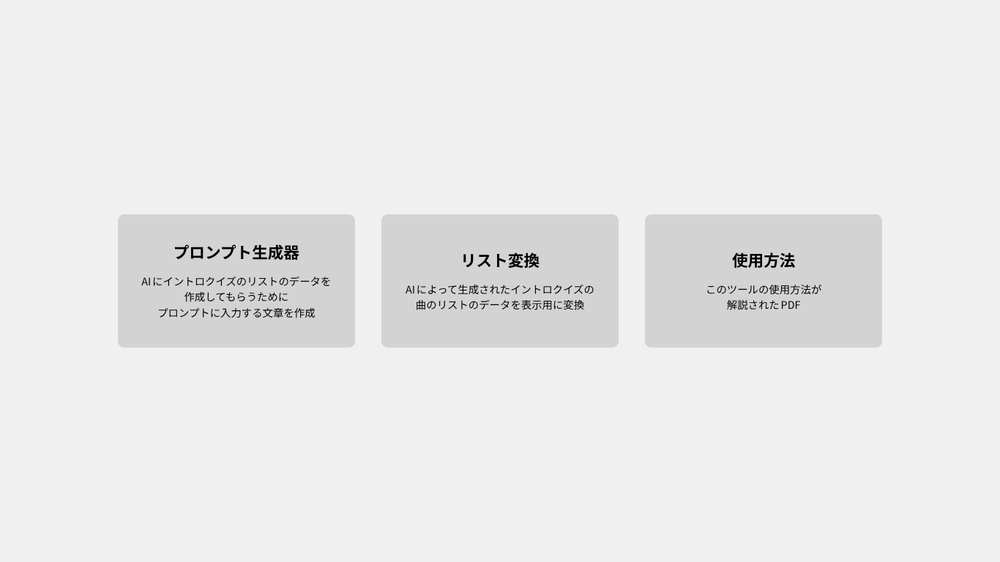
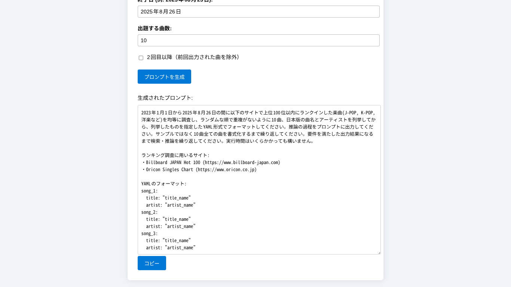
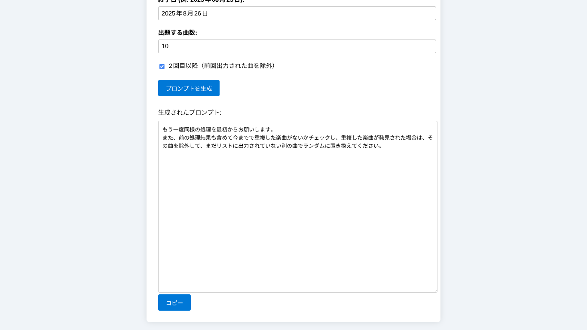
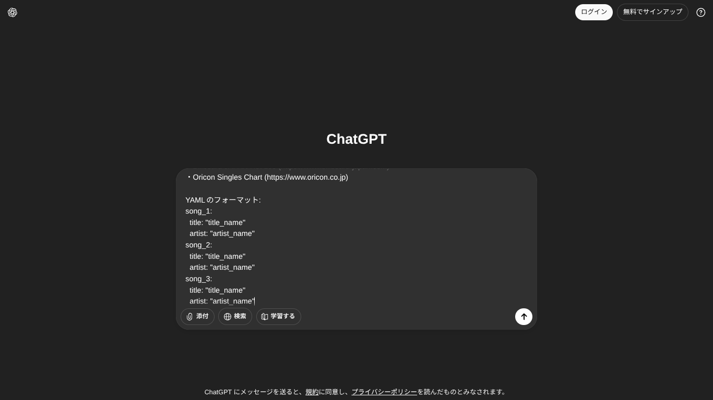
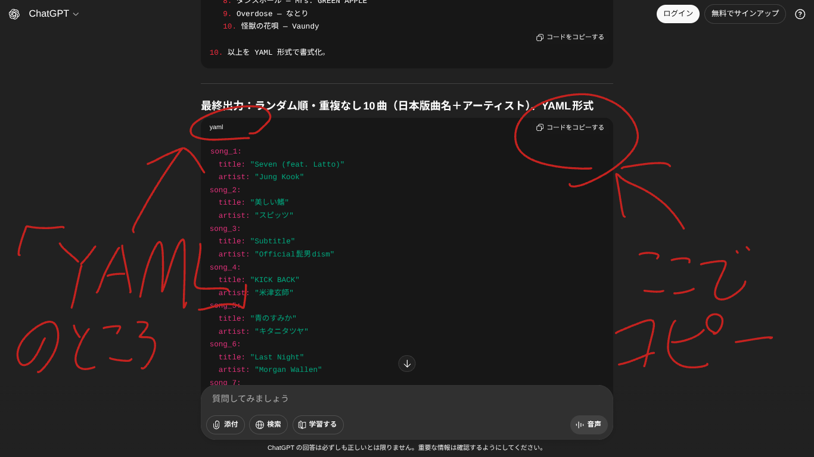
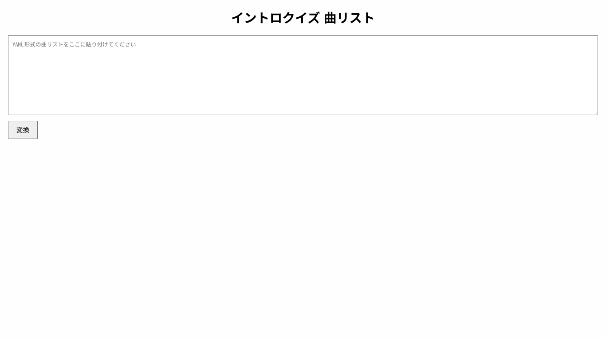
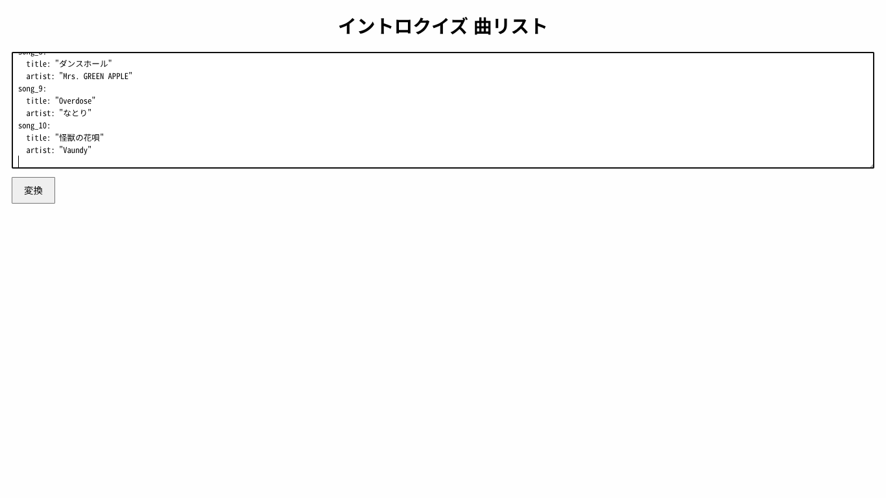

サイトのトップページの「プロンプト生成」を押して、文章作成ツールを開く。

ブラウザでツールのウェブサイトを開く。

サイトのトップページの「プロンプト生成」を押して、文章作成ツールを開く。
ツールにイントロクイズに出題する曲の範囲や数を入力する。
ページを下までスクロールし、出力されたプロンプトの文章をコピーする。

※2回目以降は「2回目以降（前回出力された曲を除外）」にチェックを入れる

ChatGPTを開く
ChatGPTのプロンプトの入力欄に作成した文章をペースト。

「yaml」と表示されているところまでスクロールして、ChatGPTにより生成されたデータをコピーする。

サイトのトップページの「リスト変換」を押して、データ表示ツールを開く。

ChatGPTにより生成された曲のリストのデータを、リスト変換にペースト。

リスト変換の「変換」ボタンを押し、データをリストにして表示する。